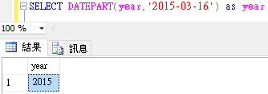

一、select基本輸出
語法：SELECT expression
(1)、輸出字串

(2)、輸出運算式
(3)、同時輸出多個項目
二、常用的數學函數
(1)、四捨五入
語法：ROUND(numeric_expression , length)
(a)、四捨五入到小數點以下第一位

(b)、四捨五入到整數第一位
(c)、四捨五入到整數第二位
(2)、天花板(CEILING)與地板(FLOOR)函數
(a)、(CEILING)小數以下無條件進位至整數

(b)、(FLOOR)小數以下無條件捨去至整數
(3)、開平方根(SQRT)與平方(SQUARE)函數
(a)、開方

(b)、平方

(4)、絕對值函數
三、常用的轉換函數
(1)、資料型態轉換函數CAST與CONVERT
語法：
CAST (expression AS data_type)
CONVERT (data_type , expression)
SELECT CAST(90 AS VARCHAR) [CAST]
其結果相等於
SELECT CONVERT(VARCHAR , 90) [CONVERT]
(2)、具有固定有效位數和小數位數的數值資料類型與CAST方法配合
四、常用的日期函數
(1)、取得目前系統日期時間函數
(2)、取得日期的部份資訊
語法：
DATEPART( datepart , date )
(a)、datepart引數
| date的部份 | 縮寫 |
| 年(year) | yy或yyyy |
| 季(quarter) | qq或q |
| 月(month) | mm或m |
| 日(day) | dd或d |
| 一年中的第幾週(week) | wk或ww |
| 一週中的第幾天(weekday) | dw |
| 時(hour) | hh |
| 分(minute) | mi或n |
| 秒(second) | ss或s |
(b)、date引數
date可以為time、date、smalldatetime、datetime、datetime2、datetimeoffset
(c)、範例
只取日期中的年的部份

只取日期中的月的部份
(3)、日期累加函數
語法：
DATEADD(datepart , number , date)
(a)、datepart引數
| date的部份 | 縮寫 |
| 年(year) | yy或yyyy |
| 季(quarter) | qq或q |
| 月(month) | mm或m |
| 日(day) | dd或d |
| 一年中的第幾週(week) | wk或ww |
| 一週中的第幾天(weekday) | dw |
| 時(hour) | hh |
| 分(minute) | mi或n |
| 秒(second) | ss或s |
(b)、number引數
指要累加的數量
(c)、date引數
date可以為time、date、smalldatetime、datetime、datetime2、datetimeoffset
(d)、範例
將原本日期累加一年
將原本日期減三個月
(4)、日期差異函數
語法：
DATEDIFF(datepart , startdate , enddate)
其算法為enddate減掉startdate
(a)、範例
計算兩日期在「年」部份的差異，差一年
計算兩日期在「月」部份的差異，差十三個月
五、常用的字串函數
(1)、大小寫轉換函數
轉成大寫

轉成小寫

(2)、計算字串長度函數與字串所佔的空間
「ABC」字串長度為3

中文字「我」所佔的byte數為一個字2byte

(3)、取得一個子字串在另一個字串起始位置
語法：CHARINDEX(pattem , source [ , start_location ] )
pattem：指定搜尋樣本，可以是字元或是字串
source：來源字串
start_location：指定從何處開始搜尋，起始值為1，代表從第一個字開始找。
(a)、範例
從ABCDE字串中找尋B字元的位置為2
從來源字串的第三個字開始找尋A字元的位置為5
(4)、取字串的左右邊的子字串
從左邊開始取兩個字元

從右邊開始取兩個字元
(5)、取一個字串中的子字串
語法：
SUBSTRING(source , start_location , length )
(a)、範例
從ABCDE字串中的第二個位置取出三個字元
(6)、重複字串函數
其功能為將指定字串重複N次，如下範例
目地為把「*」字元重複三次
(7)、取代函數
語法：
REPLACE ( string_expression , string_pattern , string_replacement )
例如將小寫的a取代成大寫的A
SELECT REPLACE('abcd','a','A')